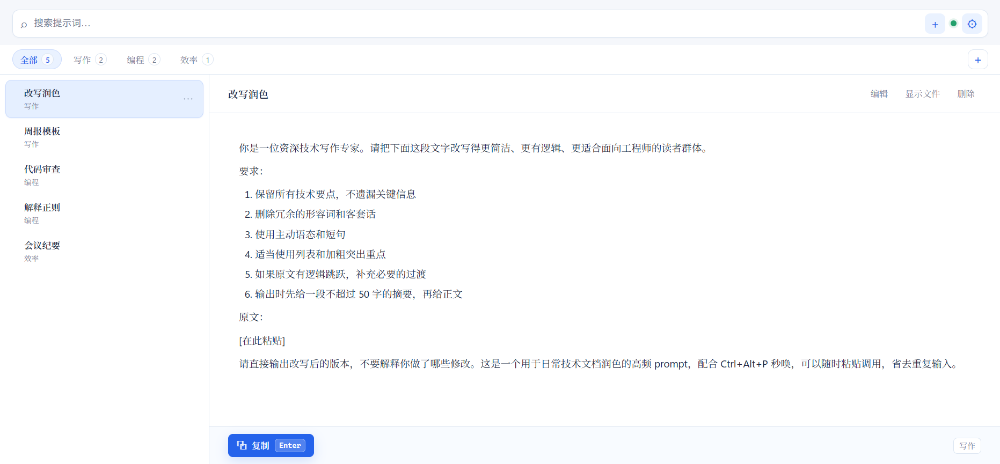
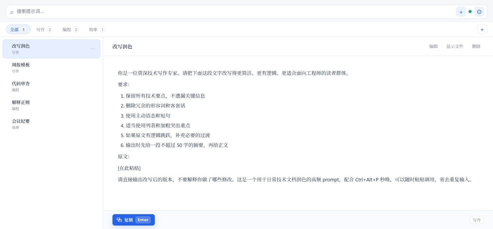
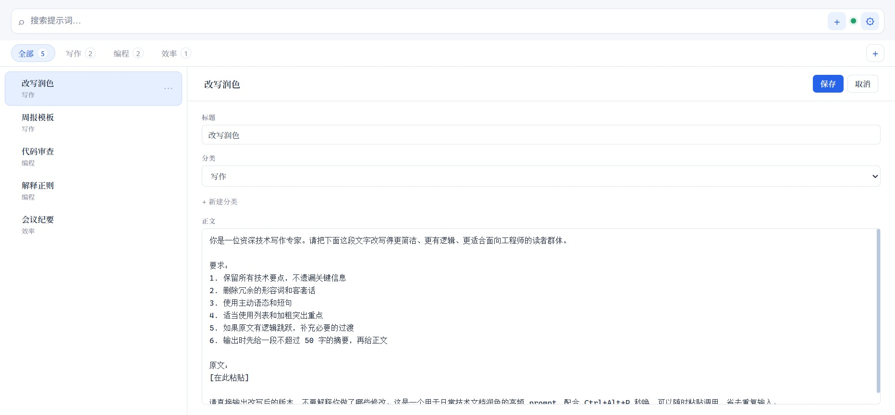
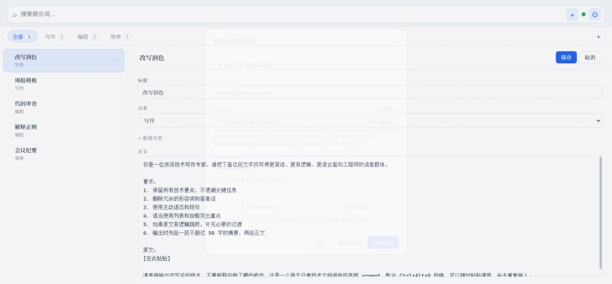

按 Ctrl+Alt+P 从任意应用唤出，搜索 → 选中 →
Enter 复制，回到原应用粘贴即用。Markdown
存储，坚果云同步，Tauri + Rust，安装包仅 1.6MB。

v1.0.6 是一次全面的设计与工程升级——从视觉系统到字体栈，从布局 bug 到拖拽内核。
浅色基调搭配 #2563eb 强调色，卡片化布局、统一圆角梯度与柔和阴影。搜索框、胶囊式分类标签（带计数徽章）、按钮、右键菜单、对话框全部重绘，聚焦态有清晰的描边光晕。
西文（Segoe UI / Aptos）与中文（Noto Serif / Sans SC）分别选型，混排更协调；正文加大字号与行距，代码统一用等宽字体 Cascadia Code。
标题栏 / 正文滚动区 / 操作栏三段固定，复制按钮始终可见。
弃用三方库，落点实时计算 + 指示线，修掉同步竞态。
逐层遍历修复多分类拉取，.trash 防泄漏。
Tauri v2 + Rust 后端，无 Electron、无内嵌浏览器。Markdown 文件 + YAML frontmatter 存储，没有数据库，没有云端账号——数据完全归你所有，用你自己的坚果云同步到所有设备。CPU 占用近乎为零，常驻后台毫无负担。
以下是 v1.0.6 实机界面。点开 Release 页可获取最新版本。



设计目标：从唤出到复制粘贴，一次都不必碰鼠标。
v1.0.6 提供 NSIS 与 MSI 两种安装包，双击安装，无需额外运行环境。
其他平台或想自行编译？看下面的源码步骤，或前往 全部 Releases。
# 克隆并安装依赖 git clone https://github.com/techdou/prompt-pocket.git cd prompt-pocket npm install # 开发模式（热重载）或打包发布 npm run tauri:dev npm run tauri:build # 产物在 src-tauri/target/release/bundle/